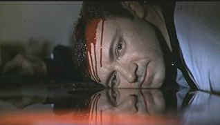

| American
Beauty (SE)/A,B+ |
| Dreamworks/1999/122/ANA
2.35 |
American Beauty
stands up to home theater scrutiny rather well. It's devastating comedy and nasty ramrod drama. The
film strikes its target with the accuracy of an Olympic archer. Even when we are laughing, an adult
standard of honesty is pivotal to the film's integrity.
Surgically dissecting suburbia can be taken very lightly. American
Beauty delivers its laughs with serious intent. The film open's with dead Lester Burnham's
narration (Hats off to Billy Wilder's Sunset Boulevard.) Burnham serves up the film's tone
perfectly before American Beauty returns to chronological story telling. The elevating
Burnham family crisis begins in innocuous fashion elevated by the wry opening. It's just another
morning of Burnham life unfolding with metronome boredom, yet filled with freshness and surprise
for audiences. Each character introduction compliments and builds on the former. Setting up the
elements brilliantly, the script sets a methodical course to uncharted disastrous waters. Every
part of the journey delivers more than anticipated. From Lester's great interaction at work or his
wonderful fantasies to the frightening depiction of the Fitts family to Carolyn Burnham's
breathless devotion to success or the relationships between Ricky Fitts and Jane Burnham to the hot
wild card of Angela Hayes, American Beauty is unfailingly interesting.
 |
| Finding beauty in the strangest
places. ©Dreamworks |
The acting is fantastic. Kevin Spacey reveals the change
in his character with natural pace. Annette Bening has enough energy for two Carolyn Burnham's.
Thora Birch finds great depth in Jane Burnham Birch is the arrow to Wes Bentley's bow.
Bentley's marvelously modulated performance is extremely moving. It's like a virus of great
performances were let loose on the set. Director Sam Mendes can be very proud of pulling out such a
uniform standard of acting excellence.
Mendes seems to have an unfailing eye for composition. Of course, he's
working with the legendary cinematographer Conrad Hall, who delivered devastating shots like
Lester's still dead head reflected in the dark pool of his own blood. Amazing shot! I am still
blown away by Lester falling rose pedal fantasy in bed. It's deliriously depicted. The Thomas
Newman score illuminates the film providing vital emotional direction with its sardonic edge. When
walking the high wire over comedy and drama, the added clues are important.
Alan Ball's audacious script plays soccer with our expectations and
emotions. We are never sure where the focus of the playing field will be and there are frequently
times when we are uncomfortable about our responses. That alone is brilliant filmmaking. Mendes
delivers the script with unfailing taste. This is a great team effort. The direction is a
remarkable achievement, all the more so from a first time film director.
A silky transfer, American Beauty's exquisite lighting is preserved with
conscientious accuracy. Color is consistently vital and fully saturated, yet controlled with no
bleeding. The image is not penetratingly sharp, but there are only a few times when it seems too
soft. There are other times when enhancement appears in use and the image details, especially small
faces within the larger frame, are excessively edgy. Contrast levels pack punch, shadow images are
illuminated amply. The DTS 5:1 surround and Dolby Digital 5:1 are both delivered with grand space.
This is one DTS track that doe not necessitate a lower dB setting for perfect balance. |
|

Selections from the feature archive include articles on Akira Kurosawa,
Frank Darabont, Blonde Bimbos, Hollywood
Street Gangs, or Vietnam:
The Hollywood Pariah, and many more....
Sturges Emerges
Preston Sturges was Hollywood's resident comic genius for more than a decade. His movies are
timeless. Click on his image to read all about it.

Watching Movies or Watching Video
Don't lose sight of why you bought that DVD in the first place.

Want to compare the home run swing of Jack Elliot to former Japanese Home Run King
Daryl Spencer? Click on the baseball for Fastballs in
Japan.


News, information, features about current films in theaters and in the
pipeline. Easy to use interface.

The official site for information about the great comic director. A treat for connoisseurs of
classic Hollywood madcap.

Information on film sound in theaters and home theaters. Lots of helpful information provided in a
handsome interface.

A self-proclaimed bastion of irreverence place where Joe
Public smacks the heck out of the studio execs that treat us like cattle.
|